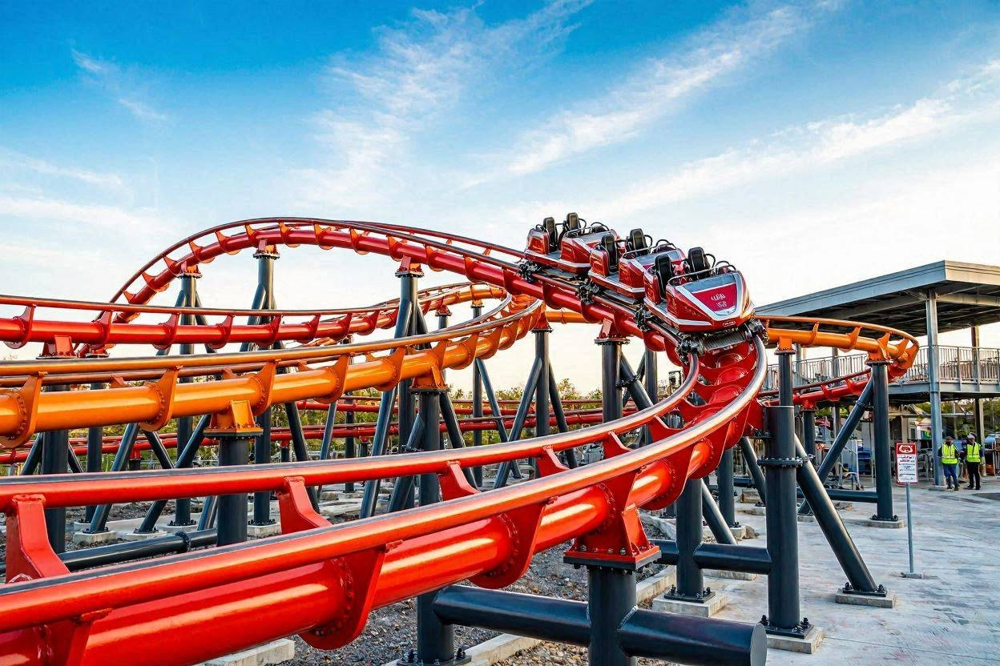

Próximamente
18 de Julio, 2026
El Rugido del Jaguar: Nuestra nueva montaña rusa extrema
¡La espera casi termina! Se viene la atracción más rápida y alta de la región. Con giros invertidos y una caída libre de 45 metros que te va a dejar sin aliento. El equipo de ingenieros ya está realizando las pruebas de seguridad mecánicas en la zona de la selva. ¡Agendate el 15 de agosto para la gran apertura oficial!
Ver detalles técnicos